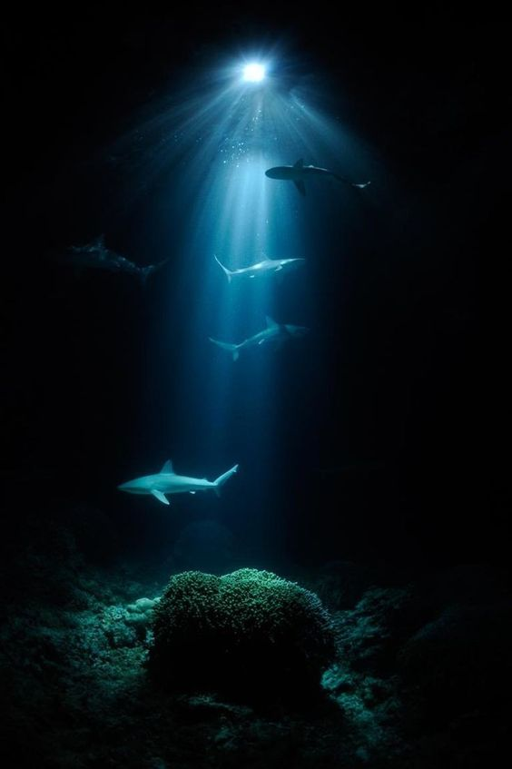
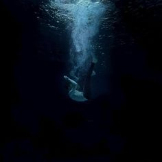
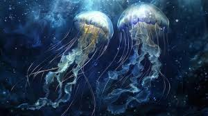

Explora el mundo submarino y descubre tu verdadero yo.
✶ Historia ✶

Acompaña a Aqua en su viaje de autoaceptación y descubre los secretos del océano.
✶ Mecánicas de Juego ✶

Aprende a nadar, recolectar fragmentos de luz y enfrentar tus miedos.
★ Habitación Segura:
Un espacio personalizable para tu personaje que ofrece momentos de paz y relajación. La habitación puede cambiar de apariencia, permitiéndote disfrutar del apartado sonoro mientras descansas del juego.
★ Interacción con NPCs
Las decisiones que tomes al hablar con los personajes que habitan el mundo tendrán un impacto directo en el desarrollo de la historia, la evolución del juego y en cómo se transforma tu habitación segura.
★ Personalización del Personaje:
Puedes elegir el género de tu personaje, permitiendo una experiencia de juego más personalizada.
★ Exploración e Interacción:
Interactúa con el entorno para recolectar items esparcidos por el mundo, que te ayudarán en tu aventura submarina.
⁑ Apartado Sonoro
El diseño sonoro busca sumergirte por completo en el mundo submarino. Los efectos de sonido y la música están cuidadosamente creados para dar la sensación de estar bajo el agua, con ecos y profundos sonidos envolventes que reflejan la inmensidad del océano. A medida que exploras, también sentirás momentos de tensión que evocan la sensación de ahogamiento, aumentando la inmersión en este entorno misterioso y desafiante.
✶ Comunidad ✶

Únete a nuestros foros y comparte tus experiencias con otros jugadores.
✶ Noticias ✶
!! Estén atentos para las últimas actualizaciones sobre el juego. !!
✶ Contacto ✶
!! Coloca aquí tus datos y te contactaremos lo más pronto posible !! :3